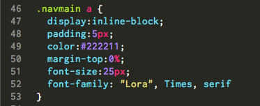

What is a block-level element?
CSS treats each HTML element as if it lives in its own box. Block-level elements occupy the entire space of their container (aka parent element). These elements look like they start on a new line and have a set, defined width and height. Examples include h1-h6, p, and div.
What is an inline element?
Inline elements flow within the text and do not start on a new line. Their width and height are determined by their content.
Display Property
The display property allows you to turn an inline element into a block-level element or vice versa.
- display: inline; => causes a block-level element to act like an inline element
- display: block; => causes an inline element to act like a block-level element
- display: inline-block; => causes a block-level element to flow like an inline element, while retaining other feature of a block-level element.
Displaying Inline
Displaying a block-level element inline will line up each element alongside each other. This technique is often used to create a horizontal navigation bar for a site.
Displaying Inline-Block
Displaying inline-block also lines up elements horizontally, but they retain certain block-level features, like manually defined width and height.
Below you'll find the CSS code I used to create the horizontal navigation bar at the top of this page. 
Why did I choose to apply inline-block to the anchor elements, a, and not the list elements, li? Certain browsers will only allow inline-block to work on elements that are inherently inline elements, of which a is one.